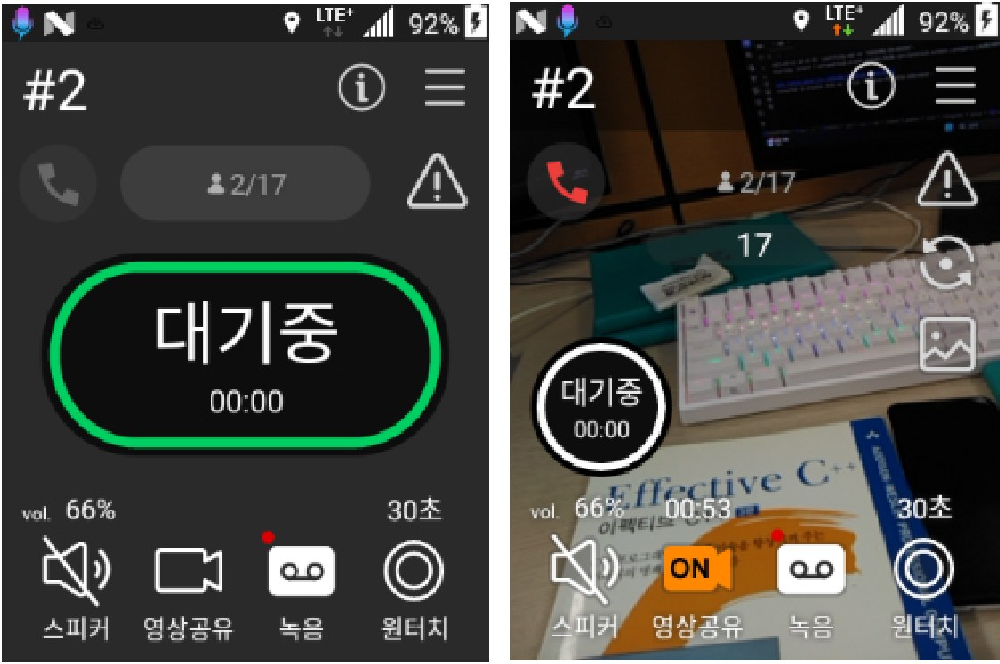

PTalk JMobile 무전 앱
무전 디바이스 기반 무전 앱을 개발하며 사운드 향상, 잡음 제거, 실시간 영상 공유 기능을 추가했습니다.
- 담당 역할
- Android 앱 개발, 무전 기능 개선, 미디어 공유 기능 구현
- 주요 성과
- 아이디스 재직 중 제품 기능 개선과 유지보수 수행
핵심 기여
- 잡음 제거 · 사운드 품질 개선
- 실시간 영상 공유 기능 구현
Portfolio
직무 프로젝트부터 개인 프로젝트, 졸업 작품까지 8개 프로젝트를 한 번에 하나씩 집중해서 살펴볼 수 있도록 정리했습니다.
Career
2018년 QA에서 시작해 백엔드·GIS, 전자칠판, 무전 서비스까지 — 4개 회사에서 쌓아온 경력과 기술 스택입니다.
2023 – 2025
PTalk JMobile 무전 앱 개발 — 사운드 향상, 잡음 제거, 영상 공유 기능 추가
2020 – 2023
IFP 전자칠판 AOSP 판서 앱과 타이머·앱리스트·화상키보드 등 내장 앱 개발
2019 – 2020
안산·통영·김포 GIS 공간정보시스템 유지보수와 현장지원시스템 기능 개발
2018
네이버 밴드 서비스 테스트와 Selenium 기반 QA 자동화 수행
About
앱 개발, 디바이스 내장 애플리케이션, 공공 웹 시스템, QA 자동화 경험을 연결해 제품을 검증 가능한 상태로 만드는 방식으로 일합니다.
Java와 Kotlin 기반 Android 애플리케이션 개발을 중심으로, 실제 사용자가 터치하고 확인하는 화면과 기능 흐름을 구현해 왔습니다. CameraX, Jetpack, OpenCV, ONNXRuntime처럼 제품 요구사항에 필요한 기술을 도입하고 기존 기능을 개선하는 업무에 익숙합니다.
Gerrit 코드리뷰, JIRA, GitLab, Confluence, Trello 등 협업 도구를 사용해 업무를 추적하고, QA 경험을 바탕으로 기능의 동작 조건과 사용자 관점의 오류 가능성을 함께 확인합니다.
Build
무전 앱, 전자칠판, 디바이스 내장 앱에서 UI와 사용자 상호작용, 기능 유지보수를 담당했습니다.
Verify
네이버 밴드 QA와 Selenium 자동화 경험을 통해 기능 검증과 개발자 커뮤니케이션을 이해합니다.
Adopt
OpenCV, ONNXRuntime, CameraX, GIS 서버 연동처럼 요구사항에 맞는 기술을 제품 흐름에 연결합니다.
Ship
JIRA, Gerrit, GitLab, Confluence, Trello를 활용해 업무 흐름과 개발 문서를 관리했습니다.
Contact
GitHub 프로필과 이력서, 경력기술서, 포트폴리오 문서를 함께 확인할 수 있습니다. 가장 빠른 연락은 이메일이며 평일 기준 빠르게 회신드립니다.